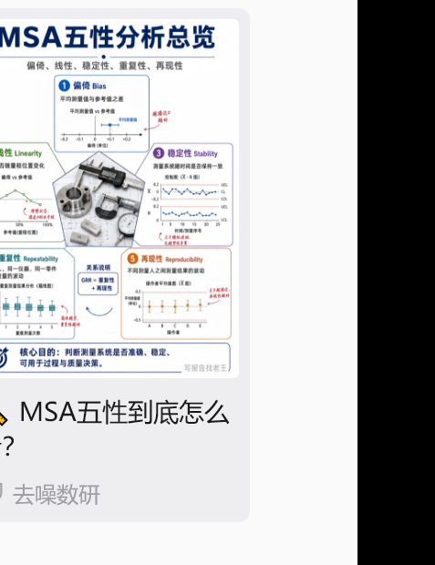

MSA 五性到底怎么看？
中高对 Lily 的用处 测量系统准不准是质量决策的前提，和制造质量工作相关；但原文未取到，只根据卡片图讲解。
原文未取到。讲解只根据微信卡片大图的可见内容。
1. 偏倚
2. 线性
3. 稳定性
4. 重复性
5. 再现性
GRR = 重复性 + 再现性
判断测量系统能否用于过程与质量决策看测量是否准确、稳定
- 偏倚看均值和参考值之差。
- 线性看偏倚随量程位置的变化。
- 稳定性看测量随时间是否一致。
- 重复性看同一人重复测量的波动。
- 再现性看不同测量人的结果波动。
展开细节
五性各自看什么
- 偏倚：比较平均测量值和参考值。
- 线性：看参考值变化时偏倚是否跟着变。
- 稳定性：用 X 图与 R 图看测量系统随时间是否保持一致。
- 重复性：同一人用同一仪器对同一零件重复测量的波动。
- 再现性：不同测量人之间的测量结果波动。
查看 MSA 五性卡片原图
